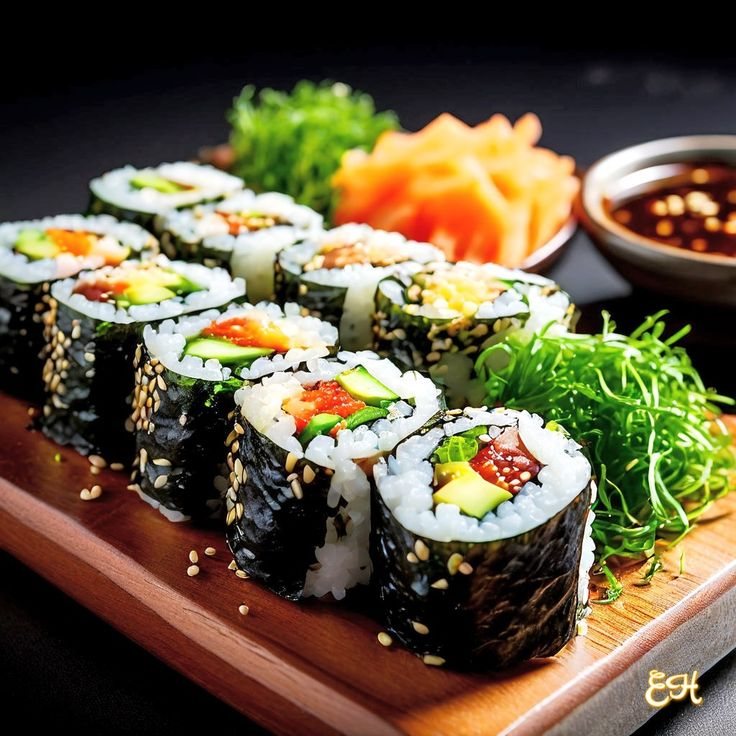

Receita de Sushi

Ingredientes (15 porções)
- 4 xícaras de arroz japonês
- 4 colheres de sopa de vinagre de arroz para sushi encontrado em lojas especializadas
- 2 pepinos
- Tirinhas de salmão
- 5 xícaras de água para cozimento do arroz
- 1 pacote de algas desidratadas para enrolar nori
- 2 cenouras
- Folhas de alface
Modo de preparo: 1 hora
- Corte os pepinos e as cenouras em tiras e deixe em molho na água com uma pitada de sal.
- Faça o arroz temperado com o sal.
- Para o tempero do arroz misture tudo numa tigelinha ou copo.
- Transfira o arroz cozido para uma tigela grande.
- As poucos acrescente o molho de sushi, com a ajuda de uma colher de pau vire o arroz, sem mexer muito.
- Deixe esfriar.
- Forre a esteira para sushi com o plástico filme.
- Coloque folha de alga com a parte mais áspera para cima.
- Umedeça a palma das mãos para o arroz não grudar.
- Preencha a alga com uma camada de arroz de mais ou menos 1 cm uniformemente, comece pelo meio da alga e espalhe, lembrando sempre de deixar 1 cm de sobra da alga para ter uma finalização elegante.
- Coloque 1 tira de pepino, 1 de cenoura, 1 de salmão e 1 folha de alface.
- Enrole com o auxilio da esteira e com a ponta dos dedos como se fosse um rocambole, lembrando de tirar a esteira conforme a alga cola no arroz.
- No final passe um pouco de água na alga e cole na própria ficará perfeito.
- Mergulhe a faca no copo com água e corte em rolinhos em um único corte para não amassar o sushi.
- Servir com um pequeno prato de molho shoyu.
Curiosidades sobre o Sushi
- No século IV a.c, o sushi nasceu como método de conserva. Peixes eram fermentados com arroz salgados para preservá-los.
- Os japoneses só começaram a comer salmão cru nos anos 1980.
- Sushimen profissionais passam anos só aprendendo a fazer o arroz!
- Esfregar os hashis ("waribashi") é considerado ofensivo (insinua que são de má qualidade).